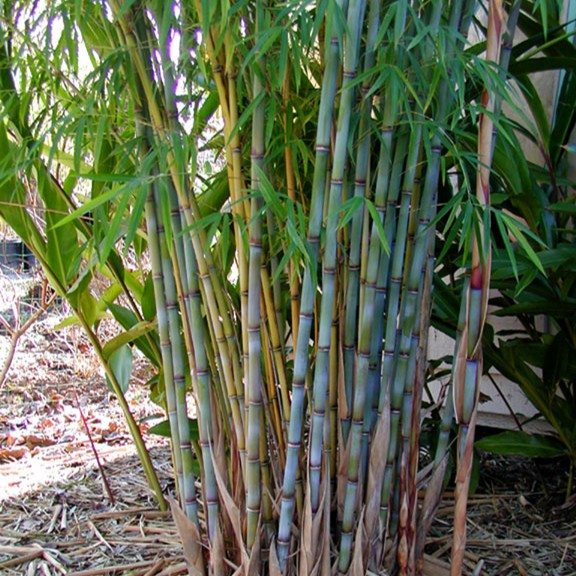
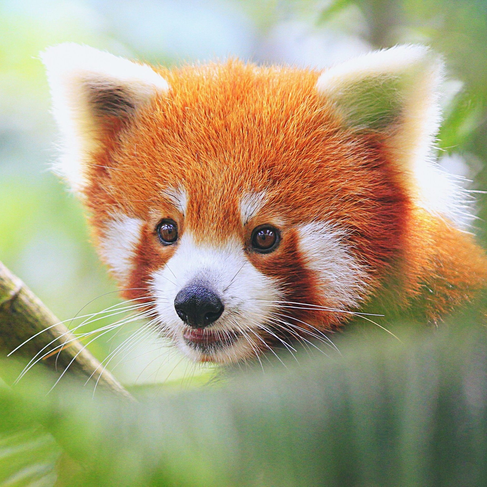
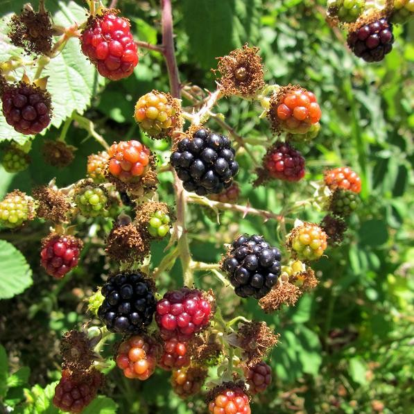
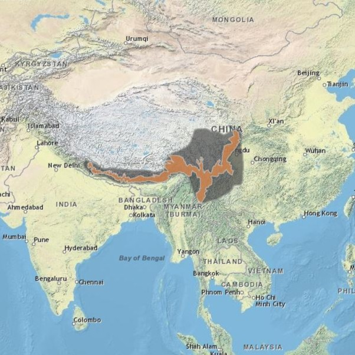

Introduction
Red pandas are one of the most interesting animals on the planet! They are adorable, furry creatures that eat bamboo and remind most people of a house cat or racoon. This site will cover topics about red pandas in this order:
Topics
- Diet
- Location
- Evolution
- Anatomy
- Endangerment
Diet
As the name suggests, red pandas eat bamboo just like their non-red counterparts. Red pandas are omnivores that also eat the things listed below:
Foods
- Bamboo
- Leaves
- Insects
- Fruit
- Bird Eggs
Location
Red pandas are most often found in the Eastern Himalayas but also inhabit other similar regions around the Himalayas. This includes countries like China, India, and Nepal.
Images



